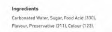
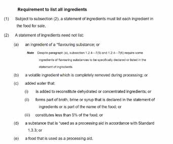

By Ephrayim Baskin | Shavuos 5782 — June 2022
There are many rivalries between Victoria and NSW. Which is the most liveable state? Which should have contained the capital? Is the superior winter sport AFL or NRL?
Perhaps the biggest debate between our states is that of the Slurpee: Is it acceptable for the kosher consumer or not? Rabbi M Gutnick of the KA says sometimes, whereas Rabbi M Gutnick of the KA says no. Well that probably sounds confusing, so let’s rephrase:
Rabbi Moshe Gutnick, the Rav Hamachshir of the Kashrut Authority (KA) of NSW, permits the consumption of any beverage as long as it meets the guidelines of their drinks policy, which is available at https://www.ka.org. au/understanding-kosher/halachic-policy-guidelines/ standards and https://www.ka.org.au/understanding- kosher/halachic-policy-guidelines/policy-fruit-juices. It must be emphasised that KA NSW does not provide blanket approval for any drink. Rather, every time you get a Slurpee or other beverage, you need to look at the label or go online and check the ingredients and make sure they do not include any problematic ingredients, as per KA NSW advice in the footnote1.
However, Rabbi Mordechai Gutnick, the Rav Hamachshir of Kosher Australia (KA) of VIC, takes a more cautious approach and only recommends beverages if they have been investigated and confirmed to contain exclusively kosher ingredients.
Both positions are based on different viewpoints of the relevant Halachic principles. The purpose of this article is not to provide any rulings – for that you should seek out your LOR (local orthodox rabbi) – but to explain the background.
Slurpees, which is the 7-11 brand of “FCBs” (frozen carbonated beverages) are just that – frozen, carbonated, soft drinks. There are other brands of FCBs such as Frozen Coke or Pepsi Freeze which are not “Slurpees”. All flavours of Slurpee or other FCB have very similar ingredients. In fact, all soft drinks do. They are:

Although the first four items above can be the subject of interesting articles in and of themselves, it is around the fifth item that the debate surrounds. You see, “flavour” is part of the ingredient list, but it never actually tells you what the flavour is! Like the Manna in the desert, is there one miraculous ingredient that just provides the exact flavour required?
The truth is that “flavour” can be made up of dozens of ingredients. According to Australian food law (FSANZ), like other international food standards, a company does not need to disclose what flavouring substances they are using in food. [You can find the full details in the image bellow.] Whoa?! It sounds incredulous, but if an ingredient is added as a flavouring substance to the food, the company does not need to tell you what it is. [Phew, the secret sauce to my cholent is safe!] Usually, the soft drink / FCB company itself does not even know what is in these flavours. These flavours are purchased from specialised “flavour houses” that sell to the company any flavour it wants (lemon, cola, raspberry, mango, gefilte fish etc.). You might say it is an acquired taste.

The formulas of these flavours are well guarded by the flavour house, and only a select few can view them. As a kosher community, we are lucky that Australian flavour houses generally allow their formulas to be investigated by the kosher certifying body. In fact, the explosion of kosher products over the last few years was only possible due to the ongoing flavour favours between Kosher Australia and Australia’s main flavour houses.
So, how is a flavour made? There are scientists called “flavourists”, who are skilled chemists and food technologists that work out what things taste like. Sounds weird, but if you asked them what raspberry tastes like, they wouldn’t just say raspberry. Rather, they could break it down to violet, warm-berry, cedar, berry preserve with notes of red fruit, green grass, sweet corn, butter and nail varnish. It’s almost as if they’re reading off the back of a wine bottle to their friends (their taste buds?). But each of the descriptors above relate to a specific chemical which, when blended, creates an overall flavour that tastes like raspberry.
To give you a taste, pun intended, see the table below for an example raspberry flavour (from a textbook), which incidentally does not contain a drop of raspberry.
| Chemical Name | Flavour | Function | Kosher Concern |
|---|---|---|---|
| α-Ionone | Warm, woody, berry-characteristic and violet-like odour | Primary flavour component | If synthetic – none. If natural – possibly derived from a grape or dairy via an industrial fermentation process. |
| β-Ionone | Violet + cedar notes (seedy and pippy effect in raspberries) | If synthetic – none. If natural – possibly derived from a grape or dairy via an industrial fermentation process. | |
| 4-Hydroxyphenylbutan-2-one | Sweet, fruity, berry, raspberry preserve odour | None | |
| Castoreum | Warm, musky note | Secondary flavour component | Secretion from a beaver |
| Damascenone | Red fruit note | None if synthetic. If natural, possible dairy/grape concern as per above. | |
| Dimethyl sulphide | Cooked fruit note – sweetcorn/tomato soup | None | |
| Acetyl methyl carbinol | Buttery note | None | |
| Ethyl acetate | Red fruit note, nail varnish | None if synthetic. If natural, possible dairy/grape concern as per above. | |
| Cis-3-hexenol | Leaf green fresh note | None | |
| Cis-3-hexenyl acetate | Fruit green note | None if synthetic. If natural, possible dairy/grape concern as per above. | |
| δ-decalactone | Creamy taste | Fatty-acids – tallow or palm/coconut oil which potentially produced on tallow/lard equipment without sufficient clean. | |
| Linalool | Lavender note | None | |
| Ethanol | Carriers/diluents/solvents | Can be grape or dairy derived | |
| Propylene Glycol | Either synthetic or natural using glycerol + sodium hydroxide | ||
| Maltodextrin | Possible issue via type of enzyme used for hydrolysis of starch. |
For the purpose of this article, we are going to focus on three ingredients in raspberry flavour:
1. Castoreum – This is a yellowish extract from the castor sacs of mature beavers. This warm, musky fragrance was sometimes used in the past for vanilla and raspberry flavours. Most flavour houses will not use this today for flavours, but might use it for fragrances.
2. Ethanol – This is a chemical name for the type of alcohol we commonly consume. It has many uses within the flavour industry as a solvent, diluent, and precursor to many other flavour ingredients. In our raspberry flavour, its purpose is not for taste, but rather to dissolve all the other flavour ingredients and then to ensure they are evenly distributed within the frozen carbonated beverage. In Australia, most ethanol is product of the sugar and wheat industries. However, some ethanol on the market can pose a few issues:
• There is a large volume of ethanol in the market produced by lactose, a by-product of cheese making. Until recently, a very large company that produced a range of Ready To Drink cocktails (RTDs) in Australia used lactose-derived ethanol exclusively.
• Due to our large wino population, and consequent mammoth grape industry, a lot of industrial ethanol can be derived from non-kosher wine. In fact, there is one very large flavour house which, if not specifically requested otherwise, will always use a grape based ethanol to dilute and dissolve their flavours.
3. δ-decalactone – This provides creamy and buttery flavours and is part of a larger group of chemicals known as esters which can make a very large range of flavour compounds. δ-decalactone features in dairy, stone fruit and berry flavours. Part of the chemical precursors to make δ-decalactone can come from either tallow (beef fat) or palm/coconut oil. The issue with the latter is that, as it is so chemically like tallow, it is usually transported and processed in the same equipment as tallow and, without special processes to control, there can be high amounts of contamination.
To determine if the overall flavour would be kosher, the kosher certifier will rely on its chemists to research and classify each of the ingredients into various groups:
1. Ingredients which are always kosher, for example dimethyl sulphide and linalool.
2. Ingredients which can sometimes be non-kosher and sometimes kosher, depending on how it is manufactured, for example δ-decalactone and ethanol.
3. Ingredients that are always non-kosher, for example castoreum.
In a case where the third category of ingredients is present, the kosher agency would jam on the brakes and reject this flavour, on account of the ingredient that can never be kosher – castoreum. If there was no castoreum, then the kosher agency would need to investigate and obtain kosher certificates or other information to ensure any ingredients in the flavour which might pose issues (i.e. of the second category) are kosher.
This leads us to back to the Slurpee issue – no Kosher Agency knows what goes into the flavours of 7-11 Slurpees. There is simply no information available, nor does 7-11 want to engage to share. There is enough information available about the Pepsi and Coke FCBs for their official approval, but not that of the Slurpees. (Note that the Australian Slurpees are unique flavours and are not the same as the certified Slurpees in the USA). The question therefore becomes: If we don’t know what is in the flavour, what reasonings are used to permit its consumption?
Enter the concept of “bittul” – if the flavour of the non- kosher item is not detectable in a product, we say that it is nullified, and it does not make the rest of the item unkosher. For example, if a drop of milk fell into the liquid of a large pot of strained beef soup, where the volume of soup was more than 60 times the volume of the milk, the milk would be nullified (bottul) and the soup permitted to be consumed.
When it comes to flavours, the amount added to the product is tiny. The total flavour is far less than one 60th of the overall product, and the individual ingredients within the flavour represent a further fraction of that. To illustrate, when I studied food science at university, the pilot plant and food labs were in the basement of a 14-storey building. One student was making non-dairy cheese and purchased a sample cheese flavour from a local flavour house. There were no instructions on the bottle and the student emptied its entire contents into the small steam heated vat. The problem is that cheese flavours are known for their highly pungent and volatile aromas. The end result was that all 14 storeys of the building had to be evacuated. That’s one way for a student to learn that flavours are added to the product in minute quantities only!
But like most things in kashrus, it is not so simple. There are multiple exceptions to the rule of bittul (and even exceptions to the exceptions). Three of these are applicable to our discussion – Avidah L’Taamah, Ein Mevatlin Issur L’chatchila and Darkan B’chach – and we will explore each one individually. We will see that they form the basis for the differing positions of the respective Kashrus authorities.
The first exception to bittul appears in Shulchan Aruch YD 98:6, where the Rema states an important caveat – if the ingredient is still detectable by taste, it is not nullified, given that it is added for taste (lit. “avidah l’taamah”). For instance, if a non-kosher balsamic vinegar was added at 1% into a salad dressing, it would not be bottul, because it would still be discernible by taste, even though it makes up less than 1 in 60 parts of the product. This would quite logically extend to flavours which are added for their taste.
However, there is an exception to this exception (exceptional!)2. Avidah l’taamah only applies if the forbidden item was inherently forbidden of its own accord and not due to having absorbed another forbidden food. For instance – salt that absorbed blood; even though the salt can be tasted if less than 1 in 60, it is still bottul, because the forbidden food, the blood, is not detectable by taste.
That said, an argument could be made that castoreum and tallow-derived flavour ingredients are quite rare these days, and the vast majority of questionable kosher ingredients in general use for beverage flavours would be non-kosher only due to a range of chemical interactions, or where the source material was initially kosher, but later contaminated. As such, there might be a basis to say that the unknown flavours would not necessarily constitute a concern of Avidah L’Taamah.
The next exception to bittul is “Ein Mevatlin Issur Lechatchila” (Shulchan Aruch YD 99:5), which translates as “one cannot intentionally nullify non-kosher product in the first instance”. Back to our meat soup example, the drop of milk is bottul only if it fell in mistakenly, but not if it is added intentionally.
In an industrial setting, if a product is made specifically with Jewish consumers in mind, as for instance, where the company specifically requests kosher certification, no bittul for any ingredients can be relied upon. However, if the product was made by a non-Jewish manufacturer without the Jewish community in mind as a consumer, then bittul could apply (subject to other exceptions above and below).
This creates an ironic scenario where, if the manufacturer has Jewish consumers in mind, the product will not be kosher if it contains any non-kosher ingredients. However, if the manufacturer does not have Jewish people in mind, then the same product might be kosher even if it does contain the very same non-kosher ingredient, provided that it is in such a small amount as to be bottul.
Although 7 and 11 equals Chai, nonetheless, the company does not appear to care about Jewish consumers, as until now they have not allowed any investigation of Slurpees. Therefore, ein mevatlin issur lechatchila does not constitute a concern, and the mechanism of bittul is still valid.
The next exception is more encompassing than the above two, and is also the subject of lots of discussion. Darkan B’chach, also known as Derech Asiyaso/Tikanaso, refers to any ingredient that is routinely part of the recipe for that product. Since it is purposefully added, it cannot be bottul, even if it does not add any flavour or any other discernible feature.
The origin of this Halacha can be traced to the Rashba, who discusses a certain medicine whose main active ingredient was a non-kosher wine product. The Rashba asserted that, since the non-kosher wine product was routinely added as one of the standard ingredients, it could not be nullified in the medicine. Rav Yosef Cairo rules like the Rashba, stating in Shulchan Aruch (YD 134:13) that non-kosher wine or vinegar which is routinely added to beverages cannot be nullified.
However, not all agree with the Rashba’s ruling. The Nodah B’Yehuda (Tinyana YD 56) discusses the production of an alcoholic drink that required a small amount of non- kosher meat as a clarifying/flocculating agent. The Nodah B’Yehuda notes that, as the meat is added purposefully and routinely, the Rashba would prohibit the beverage even when the meat was less than one 60th. However, he goes on to demonstrate that other Rishonim such as the Rambam and Ran disagree with the Rashba’s position, and he ultimately rules that the beverage is permitted to consume3.
It is evident that any non-kosher ingredient in a flavour would be considered routinely added as an integral ingredient. According to the Rashba, even if it is just there as a solvent and provides no flavour (e.g. the ethanol above), it would not be nullified and the product would not be kosher. Therefore, any potentially problematic ingredients in the Slurpee flavours would render the whole product unfit. Conversely, according to the Nodah B’Yehuda, it would be bottul. Accordingly, any potentially problematic ingredients in the Slurpee flavours would be bottul.
In the laws of Pesach (442:6), the Alter Rebbe rules, like the Rashba, that any non-kosher food item which is routinely added to a food cannot be nullified. Conversely, a responsa of the Tzemach Tzedek (YD 67) permits sugar for which blood was used to clarify and whiten the molasses prior to crystallisation. In doing so, he dismisses both the Rashba and the Alter Rebbe and invokes the Nodah B’Yehuda for support. His logic is that since the consumer does not want the taste of blood, the issue he discussed was only a rabbinic prohibition and only the whitening effect is desired from the blood, it can therefore be bottul.
It is generally assumed that the Tzemach Tzedek is not completely rejecting the ruling of his grandfather, but rather, asserting that the stringent position is not appropriate for the sugar case. Why? There are two explanations, which have dramatically different outcomes for our Slurpee discussion:
Some explain that the Tzemach Tzedek limits his grandfather’s strict position only to chometz (which is what the Alter Rebbe was discussing), or other unique prohibitions that don’t follow the usual laws of bittul, such as the case of the non-kosher wine which the Rashba deliberated4. However, others explain that the Tzemach Tzedek was lenient only because, in his case, the taste of the forbidden ingredient was not at all desired 5.
The practical distinction between these two approaches relates to how the Tzemach Tzedek would rule regarding a non-kosher ingredient in a flavour. According to the first approach, if the problematic ingredient is not chometz or actual yayin nesech, we would not adopt the stringent opinion of the Rashba. Therefore, any potentially problematic ingredients in the Slurpee flavours would be bottul. However according to the latter approach, if the sub-ingredient does not leave a bad taste, the stringent opinion of the Rashba would be adopted. Therefore, any problematic ingredients in the Slurpee flavours would not be bottul.
As somewhat of an anti-climax to this article, everyone should consult with their LOR (local orthodox rabbi) for a practical decision.
However, a couple of endnotes from me:
1. For those who are usually strict regarding flavours (as per KA VIC), it is important to note that, when it comes to a medicine which is greatly needed, there is the lenient opinion to rely upon. Additionally, flavours are somewhat less of an issue with medicines, because the flavours used are far simpler, with less “natural” ingredients that can be of concern.
2. If you really want a particular brand to be kosher- certified, call the company’s hotline, post a message through their social media pages, or send them an email. Companies really do listen to their consumers and, if enough people ask, the right people will hear the message. Any associated kashrus costs would be much less than the benefit gained by our large community of consumers.
I hope you found this flavour discussion to be fruitful. As Shavuos is upon us, it would be appropriate to invoke a fascinating mechilta about the conversion of Yisro, which was a precursor to Matan Torah. The mechilta describes in vivid detail how Moshe attracted his father-in-law to the path of Torah by describing not only the miracles of Yetzias Mitzrayim, Krias Yam Suf and the war against Amalek, but by also articulating the following flavourful quote (presented here verbatim):
"Hashem provided us the Heavenly Bread, mann, which can taste like bread, meat or fish – it includes all the delicious flavours in the world. We possess the Well of Miriam, whose liquid tastes like old wine or new, like milk or honey – it becomes any tasty drink that exists. We are on our way to Eretz Yisroel, and we have been promised by Hashem the great tidings – the Land, olam haba, Malchus Dovid, techias hamaisim and a new world thereafter, kahuna and leviya".
May we all experience this Messianic flavour speedily in our time.
Footnotes:
[1] The KA NSW advice is as follows: "While normally The Kashrut Authority will not endorse products on the basis of ingredient labels, the nature of soft drinks and our experience with them is such that all brands of carbonated/uncarbonated soft drinks – diet or otherwise – may be considered acceptable provided the following conditions are met: They do not contain grape juice, grape juice flavour, Colour 120 (cochineal or carmine), Colour 163 (anthocyanins – although some authorities permit it), Glycerol, Glycerin, Emulsifiers including 471 through 479. The sweetening agent is not fructose (fruit sugar), as this may be grape derived. 'Health' and 'Sports' drinks usually contain amino acids or other protein derivatives that may come from animal sources. Those containing ingredients with the suffix -anime or -ine should not be used unless with a reliable hechsher or unless listed here. However, if the only additional ingredients to regular soft drinks in a health drink are sucrose, dextrose, dextrin, sodium chloride, potassium chloride, or various phosphates, the product is acceptable."
[2] Another exception to Avida L’taamah is the concept of Zeh V’zeh Gorem. The argument goes like this: Although the entire mixture of the chemicals above is used to create a “raspberry” like flavour, nevertheless, if only one ingredient was missing, it would still present a raspberry flavour (albeit slightly impaired). Therefore, if one of the ingredients in this flavour was not-kosher, it can still be considered bottul, for the overall flavour would still taste like raspberry even without the presence of the problematic component. A similar argument is presented by the Minchas Yitzchak to permit whiskey aged in sherry barrels (Vol 2 28:12). Yet, this ruling is ultimately rejected; even the Minchas Yitzchak retracted in a later responsa (Vol 7 27:4). The reason is because a true zeh v’zeh gorem case is one where the resulting product is exactly the same, with or without the problematic ingredient. However, here, if even one ingredient was missing from the raspberry flavour, there would still be a minor difference to the end product (trust me, if the flavour house could get away with not using an ingredient, they would skip it to save costs.)
[3] Although the Rema in YD 134:13 seems to agree with the Rashba (especially according to the interpretation of the Minchas Yitzchok below), in YD 114:6, he clarifies that even if purposefully added, it would be bottul if it is not Avidah L’Taameh.
[4] A similar argument is put forth by R’ Pinchas Teitz in his discussion with R’ Moshe Feinstein regarding whiskey which had wine added to it. The latter’s approach to this Rashba is that the halacha is like the Rema in YD 114:6, but a baal nefesh should be machmir.
[5] This approach aligns to Minchas Yitzchak's understanding of the Rashba in his responsa regarding Scotch whiskey (vol 2 28:12) as well as the Rema in YD 134:13. See also Haaros Ubiurim 10:277, brought in the footnotes of the new editions of the Alter Rebbe's Shulchan Aruch, who learn the same way.
Originally published in Young Yeshivah Magazine. Republished with permission.